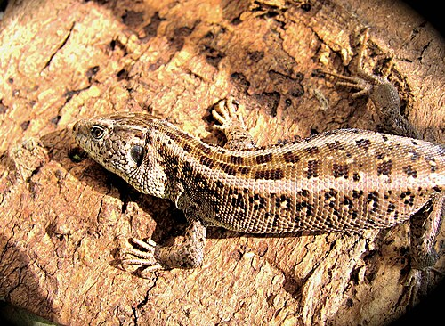
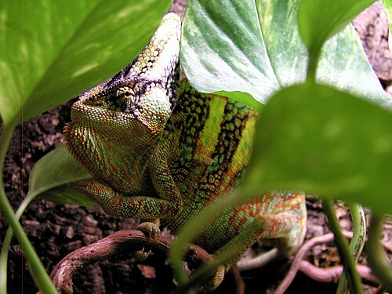

Sandödla

Sandödla (Lacerta agilis) är en äggläggande ödla av släktet halsbandsödlor (Lacerta), som föredrar öppna landskapstyper med lägre vegetation. Den förekommer i de tempererade delarna av palearktis, från mellersta och södra Europa, till Sibirien i öster och mellersta Sverige i norr. Det lever av små ryggradslösa djur som insekter.
Kameleont

Kameleonter (Chamaeleonidae) är en familj i ödlornas underordning och kräldjurens klass. Det finns ungefär 200 kameleontarter.[1] Ordet kameleont kommer från grekiskans "chamaileʹōn" som betyder "litet lejon på marken". Kameleonter påträffas dock sällan på marken utan är utpräglat busk- eller trädlevande.[2]
Skogsödla
Skogsödla (Zootoca vivipara) är en upp till 18 cm lång ödla som placeras i det egna släktet Zootoca. Den förekommer i större delen av Europa och Asien, främst i skog och andra miljöer med fuktigt mikroklimat och hög vegetation.